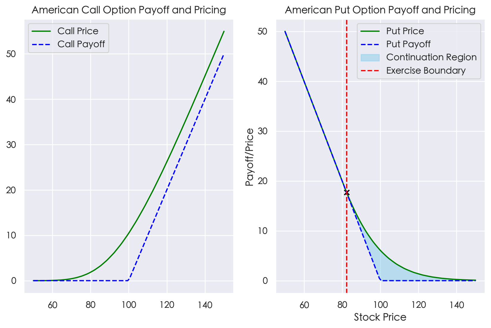

American Options
An American option is a financial derivative that grants the holder the right, but not the obligation, to buy or sell an underlying asset at a specified strike price $K$ at any time up to and including the expiration date $T$.
If exercised at time $t \le T$, an American call option yields the payoff $(S_t - K)^+$, whereas an American put option yields the payoff $(K - S_t)^+$.
American options were first listed on the Chicago Board Options Exchange (CBOE) in 1973. Their early-exercise flexibility made them particularly attractive to investors seeking greater control over the timing of their decisions, especially in volatile markets.
A Bermudan option lies between American and European options in terms of exercise flexibility: it can be exercised on a predetermined set of dates prior to expiration (typically spaced at regular intervals such as monthly or quarterly), rather than at any time. Bermudan options are widely used in structured products and for hedging interest-rate or insurance-related risks where partial timing flexibility is desirable.
This chapter covers the following topics:
- Early Exercise, Optimal Stopping, and the American Put–Call Inequality.
- American Put Options:
- Linear Complementarity Problem
- Free Boundary
- Smooth Pasting Condition
- Perpetual American Options (Puts and Dividend-Paying Calls).
- Numerical Methods for American Options (PSOR, Longstaff–Schwartz LSM, and Deep Optimal Stopping).
Recall the no-arbitrage bounds for European and American options derived in Chapter 2: \[ \begin{aligned} \left(S_t - K e^{-r(T-t)}\right)^+ &\le C_E(t, S_t) \le C_A(t, S_t) \le S_t, \\ \left(K e^{-r(T-t)} - S_t\right)^+ &\le P_E(t, S_t) \le P_A(t, S_t) \le K, \end{aligned} \] where $C_E, P_E$ denote the European call and put option prices, and $C_A, P_A$ denote the American call and put option prices.
07.1 Early Exercise and Optimal Stopping
Let $(\F_t)_{t \ge 0}$ be a filtration on a probability space $(\Omega, \F, \Prob)$. A stopping time with respect to $(\F_t)_{t \ge 0}$ is a non-negative random variable $\tau$ such that \[ \{\omega \in \Omega \mid \tau(\omega) \le t\} := \{\tau \le t\} \in \F_t \qquad \text{for all } t \ge 0. \]
Let $(X_t)_{t \ge 0}$ be an adapted continuous stochastic process. The first hitting time of a level $K$, \[ \tau = \inf\{t \ge 0 \mid X_t = K\}, \] is a stopping time: at any time $t$, the information in $\F_t$ suffices to determine whether $\tau \le t$ has occurred.
For an American option, the exercise time is a stopping time. Taking an American call option as an example, we seek \[ \arg\max_{0 \le \tau \le T} \E^{\Q}\left[e^{-r\tau}(S_\tau - K)^+\right]. \] Setting $Z_t := e^{-rt}(S_t - K)^+$, the problem reduces to finding a stopping time $\tau \in [0, T]$ that maximizes $\E^{\Q}[Z_\tau]$.
Let $(Z_t)_{0 \le t \le T}$ be a right-continuous adapted process, and let $\tau \in [t, T]$ be a stopping time. Then $Z_\tau$ is integrable and:
- If $(Z_t)$ is a submartingale, then $Z_t \le \E_t[Z_\tau]$.
- If $(Z_t)$ is a supermartingale, then $Z_t \ge \E_t[Z_\tau]$.
- If $(Z_t)$ is a martingale, then $Z_t = \E_t[Z_\tau]$.
Consequently, for the optimal stopping problem $\sup_{0 \le \tau \le T} \E[Z_\tau]$:
- If $(Z_t)$ is a submartingale, then $\hat{\tau} = T$ is optimal.
- If $(Z_t)$ is a supermartingale, then $\hat{\tau} = 0$ is optimal.
- If $(Z_t)$ is a martingale, then every stopping time $\tau \in [0, T]$ is optimal.
For each stopping time $\tau \in [t, T]$, define the value function at time $t$ by \[ J_t(\tau) = \E_t[Z_\tau], \] and define the optimal value function by \[ V_t = \sup_{t \le \tau \le T} J_t(\tau). \] A stopping time $\hat{\tau}_t \in [t, T]$ is said to be optimal at time $t$ if $J_t(\hat{\tau}_t) = V_t = \sup_{t \le \tau \le T} J_t(\tau)$, meaning that stopping at $\hat{\tau}_t$ achieves the maximum expected payoff among all stopping times in $[t, T]$.
Our goal is to characterize the optimal value function $V_t$.
The optimal value process $(V_t)_{0 \le t \le T}$ is a supermartingale.
Fix $0 \le u < t \le T$ and compare two strategies over $[u, T]$:
- Follow the optimal strategy $\tau_1 = \hat{\tau}_u$ from time $u$.
- Do not stop on $[u, t)$, and from time $t$ onward follow the optimal strategy $\tau_2 = \hat{\tau}_t$.
By definition, Strategy 1 has value $V_u$ at time $u$. By the tower property of conditional expectation, Strategy 2 has value \[ J_u(\tau_2) = \E[Z_{\tau_2} \mid \F_u] = \E\left[\E[Z_{\hat{\tau}_t} \mid \F_t] \mid \F_u\right] = \E[V_t \mid \F_u]. \] Since $\hat{\tau}_t$ is an admissible stopping time in $[u, T]$, optimality of $\hat{\tau}_u$ implies $J_u(\hat{\tau}_u) \ge J_u(\hat{\tau}_t)$, and hence \[ V_u = J_u(\hat{\tau}_u) \ge J_u(\hat{\tau}_t) = \E[V_t \mid \F_u]. \] Therefore, $(V_t)_{0 \le t \le T}$ is a supermartingale. ◻
We say that a process $X$ dominates a process $Y$ if $X_t \ge Y_t$ almost surely for all $t \ge 0$.
The optimal value process $(V_t)_{0 \le t \le T}$ is the smallest supermartingale dominating $(Z_t)_{0 \le t \le T}$. It is called the Snell envelope of $(Z_t)$.
At any time $t \in [0, T]$, compare two strategies over $[t, T]$:
- Follow the optimal strategy $\tau_1 = \hat{\tau}_t$.
- Stop immediately at time $t$, i.e., $\tau_2 = t$.
Strategy 1 has value $V_t$, while Strategy 2 has value $J_t(t) = \E[Z_t \mid \F_t] = Z_t$. Because $\tau_2 = t$ is an admissible stopping time in $[t, T]$, we have $V_t = J_t(\hat{\tau}_t) \ge J_t(t) = Z_t$, so $(V_t)$ dominates $(Z_t)$.
Now let $(X_t)$ be any supermartingale dominating $(Z_t)$, and let $\tau \in [t, T]$ be any stopping time. By Lemma 07.1 and the domination property, \[ X_t \ge \E[X_\tau \mid \F_t] \ge \E[Z_\tau \mid \F_t] = J_t(\tau). \] Taking the supremum over all stopping times $\tau \in [t, T]$ yields $X_t \ge V_t$. Thus $(V_t)$ is the smallest supermartingale dominating $(Z_t)$. ◻
Optimal Stopping with It\^{o
Processes}
Let $(X_t)_{0 \le t \le T}$ satisfy the SDE \[ \dd X_t = \mu(t, X_t)\dd t + \sigma(t, X_t)\dd W_t, \] where $(W_t)$ is a standard Brownian motion. Given a payoff function $\varphi(t, x)$, consider the optimal stopping problem \[ \sup_{0 \le \tau \le T} \E[\varphi(\tau, X_\tau)]. \] Let $\hat{\tau}_t \in [t, T]$ attain the optimal value $V(t, X_t) = \sup_{t \le \tau \le T} \E_t[\varphi(\tau, X_\tau)]$, and assume that $V, \mu, \sigma$ are sufficiently smooth. Over an infinitesimal interval $[t, t + \Delta t]$, compare three strategies:
- Follow the optimal strategy $\tau_1 = \hat{\tau}_t$, yielding value $V(t, X_t)$.
- Stop immediately at $\tau_2 = t$, yielding value $\varphi(t, X_t)$.
- Wait until $t + \Delta t$ and then follow the optimal strategy $\tau_3 = \hat{\tau}_{t+\Delta t}$, yielding value \[ \E_t[\varphi(\tau_3, X_{\tau_3})] = \E_t\Bigl[\textcolor{red}{\E[\varphi(\tau_3, X_{\tau_3}) \mid \F_{t+\Delta t}]}\Bigr] = \E_t\Bigl[\textcolor{red}{V(t + \Delta t, X_{t+\Delta t})}\Bigr]. \]
By the optimality of $\hat{\tau}_t$, \[ \begin{aligned} V(t, X_t) &\ge \varphi(t, X_t), \\ V(t, X_t) &\ge \E_t[V(t + \Delta t, X_{t+\Delta t})]. \end{aligned} \] Applying It\^{o}'s formula to $V(t, X_t)$ gives \[ \begin{aligned} \dd V(t, X_t) &= \frac{\partial V}{\partial t}\dd t + \frac{\partial V}{\partial x}\dd X_t + \frac{1}{2}\frac{\partial^2 V}{\partial x^2}(\dd X_t)^2 \\ &= \left(\frac{\partial V}{\partial t} + \mu(t, X_t)\frac{\partial V}{\partial x} + \frac{1}{2}\sigma^2(t, X_t)\frac{\partial^2 V}{\partial x^2}\right)\dd t + \sigma(t, X_t)\frac{\partial V}{\partial x}\dd W_t. \end{aligned} \] Integrating from $t$ to $t + \Delta t$ yields \[ \begin{aligned} V(t + \Delta t, X_{t+\Delta t}) &= V(t, X_t) + \int_t^{t+\Delta t} \left(\frac{\partial V}{\partial s} + \mu(s, X_s)\frac{\partial V}{\partial x} + \frac{1}{2}\sigma^2(s, X_s)\frac{\partial^2 V}{\partial x^2}\right)\dd s \\ &\quad + \int_t^{t+\Delta t} \sigma(s, X_s)\frac{\partial V}{\partial x}\dd W_s. \end{aligned} \] Taking the conditional expectation $\E_t[\cdot]$ on both sides (so the stochastic integral vanishes) and applying the supermartingale inequality gives \[ \begin{aligned} \E_t[V(t + \Delta t, X_{t+\Delta t})] &= V(t, X_t) + \int_t^{t+\Delta t} \E_t\left[\frac{\partial V}{\partial s} + \mu(s, X_s)\frac{\partial V}{\partial x} + \frac{1}{2}\sigma^2(s, X_s)\frac{\partial^2 V}{\partial x^2}\right]\dd s \\ &\le V(t, X_t). \end{aligned} \] Dividing by $\Delta t$ and letting $\Delta t \downarrow 0$, it follows that \[ \frac{\partial V}{\partial t} + \mu(t, x)\frac{\partial V}{\partial x} + \frac{1}{2}\sigma^2(t, x)\frac{\partial^2 V}{\partial x^2} \le 0. \] We summarize the two necessary conditions:
- Strategy 1 dominates Strategy 2: $V(t, x) \ge \varphi(t, x)$.
- Strategy 1 dominates Strategy 3: \[ \frac{\partial V}{\partial t} + \mu(t, x)\frac{\partial V}{\partial x} + \frac{1}{2}\sigma^2(t, x)\frac{\partial^2 V}{\partial x^2} \le 0. \]
At time $t$, it is optimal to stop if and only if $V(t, X_t) = \varphi(t, X_t)$, and it is optimal to continue if and only if $V(t, X_t) > \varphi(t, X_t)$.
Define the continuation region $C$ and the stopping (exercise) region $D$ by \[ C := \{(t, x) \in [0, T) \times \R : V(t, x) > \varphi(t, x)\}, \qquad D := \{(t, x) \in [0, T] \times \R : V(t, x) = \varphi(t, x)\}. \] The continuation region $C$ collects all time–state pairs at which it is optimal to hold the option rather than exercise.
Under sufficient regularity conditions, the optimal value function $V$ solves the free-boundary problem \[ \begin{aligned} \frac{\partial V}{\partial t} + \mu(t, x)\frac{\partial V}{\partial x} + \frac{1}{2}\sigma^2(t, x)\frac{\partial^2 V}{\partial x^2} &= 0, && (t, x) \in C, \\ V(t, x) &= \varphi(t, x), && (t, x) \in \partial C. \end{aligned} \]
Determining the continuation region $C$ together with its free boundary $\partial C$ is the central task in solving an optimal stopping problem.
American Call Option
For an American call option on a non-dividend-paying stock, the payoff function is $\varphi(S_t) = (S_t - K)^+$. The optimal stopping problem is \[ \sup_{0 \le \tau \le T} \E^{\Q}\left[e^{-r\tau}(S_\tau - K)^+\right], \] where $(S_t)$ follows the risk-neutral dynamics $\dd S_t = S_t(r\dd t + \sigma\dd W_t)$ under $\Q$.
If $\varphi$ is an increasing convex function and $(X_t)$ is a submartingale such that $\varphi(X_t)$ is integrable for all $t$, then $(\varphi(X_t))$ is a submartingale.
For any $0 \le t \le s$, Jensen's inequality and the monotonicity of $\varphi$ yield \[ \E[\varphi(X_s) \mid \F_t] \ge \varphi\bigl(\E[X_s \mid \F_t]\bigr) \ge \varphi(X_t). \qedhere \] ◻
Assume the risk-free interest rate satisfies $r \ge 0$ and the underlying stock pays no dividends. Then it is never optimal to exercise an American call option prior to maturity: the optimal stopping time is $\hat{\tau} = T$, and $C_A(t, S_t) = C_E(t, S_t)$.
Let $Z_t := e^{-rt}(S_t - K)^+$. Under $\Q$, the discounted stock price $e^{-rt}S_t$ is a martingale. For any $0 \le t \le u \le T$, the function $x \mapsto (x - K e^{-ru})^+$ is convex; applying Jensen's inequality together with $e^{-ru} \le e^{-rt}$ (since $r \ge 0$) gives \[ \begin{aligned} \E_t^{\Q}[Z_u] &= \E_t^{\Q}\left[e^{-ru}(S_u - K)^+\right] = \E_t^{\Q}\left[\left(e^{-ru}S_u - K e^{-ru}\right)^+\right] \\ &\ge \left(\E_t^{\Q}[e^{-ru}S_u] - K e^{-ru}\right)^+ = \left(e^{-rt}S_t - K e^{-ru}\right)^+ \\ &\ge \left(e^{-rt}S_t - K e^{-rt}\right)^+ = e^{-rt}(S_t - K)^+ = Z_t. \end{aligned} \] Hence $(Z_t)_{0 \le t \le T}$ is a $\Q$-submartingale. By Lemma 07.1, the optimal stopping time is $\hat{\tau} = T$, so $C_A(t, S_t) = C_E(t, S_t)$. ◻
The assumption $r \ge 0$ in Theorem 07.3 is essential. In a negative-interest-rate environment ($r < 0$), we have $e^{-ru} > e^{-rt}$ for $u > t$, so delaying payment of the strike $K$ incurs a carrying cost and early exercise of a non-dividend-paying American call can become optimal.
Because an American put can be exercised early whereas a non-dividend-paying American call is never exercised early when $r \ge 0$, European put–call parity relaxes into a two-sided arbitrage inequality.
For American call and put options with identical strike $K$ and maturity $T$ written on a non-dividend-paying stock ($q = 0$) with risk-free rate $r \ge 0$,
$$ S_0 - K \le C_A(0, S_0) - P_A(0, S_0) \le S_0 - K e^{-rT}. $$Upper bound. By Theorem 07.3, $C_A(0, S_0) = C_E(0, S_0)$, and since early-exercise flexibility is non-negative, $P_A(0, S_0) \ge P_E(0, S_0)$. Applying European put–call parity gives \[ C_A(0, S_0) - P_A(0, S_0) \le C_E(0, S_0) - P_E(0, S_0) = S_0 - K e^{-rT}. \]
Lower bound. Consider two portfolios formed at $t = 0$:
- Portfolio A: one American call plus $K$ in cash invested at the risk-free rate $r$, costing $C_A(0, S_0) + K$.
- Portfolio B: one American put plus one share of stock, costing $P_A(0, S_0) + S_0$.
Suppose the holder of Portfolio B exercises the American put at any stopping time $\tau \in [0, T]$. Upon exercise, Portfolio B delivers the stock for $K$ in cash, so its value at time $\tau$ is $K$. Meanwhile, Portfolio A is worth $C_A(\tau, S_\tau) + K e^{r\tau} \ge K$ (since $C_A \ge 0$ and $r \ge 0$). If the put is never exercised prior to expiry, then at $t = T$ Portfolio B is worth $(K - S_T)^+ + S_T = \max(S_T, K)$, while Portfolio A is worth $(S_T - K)^+ + K e^{rT} \ge (S_T - K)^+ + K = \max(S_T, K)$. Thus Portfolio A dominates Portfolio B in every state of the world and at every exercise time $\tau$. By no-arbitrage, \[ C_A(0, S_0) + K \ge P_A(0, S_0) + S_0 \iff C_A(0, S_0) - P_A(0, S_0) \ge S_0 - K. \qedhere \] ◻
07.2 American Put Options
For an American put option, the payoff function is $\varphi(S_t) = (K - S_t)^+$. Its time-$t$ price is $P_A(t, S_t)$, and the associated discounted optimal value function is \[ V(t, S_t) := e^{-rt} P_A(t, S_t) = \sup_{t \le \tau \le T} \E_t^{\Q}\left[e^{-r\tau}(K - S_\tau)^+\right] = \sup_{t \le \tau \le T} \E_t^{\Q}\left[\frac{(K - S_\tau)^+}{B_\tau}\right], \] where $B_t = e^{rt}$ is the money-market account. Equivalently, \[ P_A(t, S_t) = \sup_{t \le \tau \le T} \E_t^{\Q}\left[e^{-r(\tau - t)}(K - S_\tau)^+\right]. \]
In general, for $r > 0$, the price of an American put strictly exceeds that of the corresponding European put. Indeed, fix $t < T$ in the Black–Scholes model. If $S_t = 0$, then $S_T = 0$ and $P_E(t, 0) = K e^{-r(T-t)} < K = (K - 0)^+$. By continuity, $P_E(t, S_t) < (K - S_t)^+$ for sufficiently small $S_t > 0$, whereas an American put always satisfies $P_A(t, S_t) \ge (K - S_t)^+$.
Intuitively, the holder of a call option pays $K$ upon exercise, so deferring exercise allows $K$ to earn interest (when $r > 0$). Conversely, the holder of a put option receives $K$ upon exercise; when the stock price is sufficiently low, exercising early to collect $K$ and earn interest outweighs the remaining time value of waiting.
Linear Complementarity Problem and Free Boundary
Consider a self-financing portfolio $\Pi_t = P_A(t, S_t) + \kappa_t S_t + \beta_t B_t$, viewed as holding the American put long and shorting $-\kappa_t S_t - \beta_t B_t$. Unlike the European case, early exercise introduces an inequality in the hedging relation, as summarized in Table 07.1.
| Option Type | Long | Short | Economic Interpretation | |
|---|---|---|---|---|
| European | $\dd P_E$ | $=$ | $-\kappa_t \dd S_t - \beta_t \dd B_t$ | Must hold with equality to preclude arbitrage |
| American | $\dd P_A$ | $\le$ | $-\kappa_t \dd S_t - \beta_t \dd B_t$ | Strict inequality occurs in the exercise region |
Delta-hedging with $\kappa_t = -\frac{\partial P_A}{\partial S}$ therefore yields the Black–Scholes inequality for the American put: \[ \frac{\partial P_A}{\partial t} + r S \frac{\partial P_A}{\partial S} + \frac{1}{2}\sigma^2 S^2 \frac{\partial^2 P_A}{\partial S^2} - r P_A \le 0. \] Whenever it is optimal to continue—that is, $(t, S_t) \in C$—no immediate exercise takes place, so $\dd\Pi_t = 0$ and equality holds: \[ \frac{\partial P_A}{\partial t} + r S \frac{\partial P_A}{\partial S} + \frac{1}{2}\sigma^2 S^2 \frac{\partial^2 P_A}{\partial S^2} - r P_A = 0, \qquad (t, S_t) \in C. \] To summarize:
- In the continuation region $C$ (option not exercised): \[ P_A(t, S) > (K - S)^+, \qquad \frac{\partial P_A}{\partial t} + r S \frac{\partial P_A}{\partial S} + \frac{1}{2}\sigma^2 S^2 \frac{\partial^2 P_A}{\partial S^2} - r P_A = 0. \]
- In the stopping region $D$ (option exercised): \[ P_A(t, S) = (K - S)^+, \qquad \frac{\partial P_A}{\partial t} + r S \frac{\partial P_A}{\partial S} + \frac{1}{2}\sigma^2 S^2 \frac{\partial^2 P_A}{\partial S^2} - r P_A \le 0. \]
Table 07.2 contrasts the probabilistic and PDE formulations of European and American put options, where $\mathcal{L} u := \frac{\partial u}{\partial t} + r S \frac{\partial u}{\partial S} + \frac{1}{2}\sigma^2 S^2 \frac{\partial^2 u}{\partial S^2}$ denotes the infinitesimal generator plus time derivative.
| l >{\raggedright\arraybackslash}X >{\raggedright\arraybackslash}X @{}} | European Put ($P_E$) | American Put ($P_A$) |
|---|---|---|
| Payoff | $P_E(T, S_T) = (K - S_T)^+$ | $\varphi(S_\tau) = (K - S_\tau)^+$ at stopping time $\tau$ |
| Price | $P_E(t, S_t) = e^{-r(T-t)}\E_t^{\Q}[(K - S_T)^+]$ | $P_A(t, S_t) = \sup\limits_{t \le \tau \le T} \E_t^{\Q}\!\left[e^{-r(\tau - t)}(K - S_\tau)^+\right]$ |
| Discounted Value | $f(t, S_t) = e^{-rt} P_E(t, S_t)$ | $V(t, S_t) = e^{-rt} P_A(t, S_t) = \sup\limits_{t \le \tau \le T} \E_t^{\Q}\!\left[e^{-r\tau}(K - S_\tau)^+\right]$ |
| \midrule Dynkin PDE | $\mathcal{L} f = 0$ | $\mathcal{L} V = 0$ on $C$; \quad $\mathcal{L} V \le 0$ on $D$ (where $V = e^{-rt}(K - S)^+$) |
| Black–Scholes PDE | $\mathcal{L} P_E - r P_E = 0$ | $\mathcal{L} P_A - r P_A = 0$ on $C$ ($P_A > (K - S)^+$); \newline $\mathcal{L} P_A - r P_A \le 0$ on $D$ ($P_A = (K - S)^+$) |
The American put price $P_A(t, S)$ solves the linear complementarity problem on $[0, T) \times (0, \infty)$: \[ \begin{gathered} \min\left\{-\frac{\partial P_A}{\partial t} - r S \frac{\partial P_A}{\partial S} - \frac{1}{2}\sigma^2 S^2 \frac{\partial^2 P_A}{\partial S^2} + r P_A,\; P_A - (K - S)^+\right\} = 0, \\ P_A(T, S) = (K - S)^+. \end{gathered} \]
As illustrated in Figure 07.1, at each time $t \in [0, T)$ there exists a critical stock price $S_*(t) \in (0, K]$ separating the exercise region $\{S \le S_*(t)\}$ from the continuation region $\{S > S_*(t)\}$.

Let $S_*(t)$ denote the optimal exercise boundary of an American put option. Then $P_A(t, S)$ satisfies \[ \begin{aligned} \frac{\partial P_A}{\partial t} + r S \frac{\partial P_A}{\partial S} + \frac{1}{2}\sigma^2 S^2 \frac{\partial^2 P_A}{\partial S^2} - r P_A &= 0, && S > S_*(t),\; t \in [0, T), \\ P_A(t, S_*(t)) &= K - S_*(t), && t \in [0, T), \\ P_A(T, S) &= (K - S)^+, && S > 0. \end{aligned} \]
Smooth Pasting Condition
Because the free boundary $S_*(t)$ is unknown a priori, the value-matching condition $P_A(t, S_*(t)) = K - S_*(t)$ alone is insufficient to pin down both $P_A$ and $S_*$. The missing boundary condition is given by the smooth pasting condition.
At the optimal exercise boundary $S_*(t)$, the American put price satisfies \[ \frac{\partial P_A}{\partial S}(t, S_*(t)) = -1. \]
Since $P_A(t, S) = K - S$ for $S \le S_*(t)$, the left-hand spatial derivative at $S_*(t)$ is $-1$. Consider the right-hand spatial derivative $\partial_S P_A(t, S_*(t)^+)$:
- Suppose $\partial_S P_A(t, S_*(t)^+) < -1$. Since $P_A(t, S_*(t)) = K - S_*(t)$, a first-order Taylor expansion at $S_*(t) + \varepsilon$ for sufficiently small $\varepsilon > 0$ gives \[ P_A(t, S_*(t) + \varepsilon) = P_A(t, S_*(t)) + \partial_S P_A(t, S_*(t)^+)\,\varepsilon + o(\varepsilon) < K - S_*(t) - \varepsilon = K - \bigl(S_*(t) + \varepsilon\bigr). \] This violates the no-arbitrage lower bound $P_A(t, S) \ge (K - S)^+$: one could buy the put at $S = S_*(t) + \varepsilon$ and exercise it immediately for a strictly positive riskless profit. Hence $\partial_S P_A(t, S_*(t)^+) \ge -1$.
- Suppose $\partial_S P_A(t, S_*(t)^+) > -1$. Then $P_A(t, \cdot)$ exhibits a strict upward kink at $S_*(t)$, so the continuation value locally dominates the intrinsic payoff even slightly to the left of $S_*(t)$. Consequently, lowering the exercise threshold from $S_*(t)$ to $S_*(t) - \delta$ for a sufficiently small $\delta > 0$ yields a strictly larger option value, contradicting the optimality of $S_*(t)$ (equivalently, by the It\^{o}–Tanaka formula, a positive jump in $\partial_S P_A$ at $S_*(t)$ produces a positive local-time drift, contradicting the supermartingale property of $e^{-rt}P_A(t, S_t)$).
Combining both cases yields $\frac{\partial P_A}{\partial S}(t, S_*(t)) = -1$. ◻
07.3 Perpetual American Options
A perpetual American option has no expiration date ($T = \infty$) and can be exercised at any finite stopping time. While finite-maturity American options generally admit no closed-form solution, the perpetual American put option can be solved analytically when $r > 0$.
Let $P_\infty(S)$ denote the price of a perpetual American put option with strike $K$ under $r > 0$. By time homogeneity, $P_\infty$ depends only on $S$ and the optimal exercise boundary is a constant $S^* \in (0, K)$. The free-boundary PDE reduces to the Euler–Cauchy ordinary differential equation \[ \frac{1}{2}\sigma^2 S^2 \frac{\dd^2 P_\infty}{\dd S^2} + r S \frac{\dd P_\infty}{\dd S} - r P_\infty = 0, \qquad S > S^*. \] Trying $P_\infty(S) = S^\lambda$ yields the characteristic equation \[ \frac{1}{2}\sigma^2 \lambda(\lambda - 1) + r\lambda - r = (\lambda - 1)\left(\frac{1}{2}\sigma^2 \lambda + r\right) = 0, \] with roots $\lambda_1 = 1$ and $\lambda_2 = -\frac{2r}{\sigma^2} := -\gamma < 0$. The general solution on $(S^*, \infty)$ is therefore \[ P_\infty(S) = A S + B S^{-\gamma}. \] Because $0 \le P_\infty(S) \le K$ is bounded as $S \to \infty$, we must have $A = 0$, leaving $P_\infty(S) = B S^{-\gamma}$.
The value-matching and smooth pasting conditions at $S = S^*$ are \[ \begin{aligned} P_\infty(S^*) &= K - S^*, \\ \frac{\dd P_\infty}{\dd S}(S^*) &= -1. \end{aligned} \] From the second condition, $-\gamma B (S^*)^{-\gamma - 1} = -1$, which gives $B = \frac{(S^*)^{\gamma + 1}}{\gamma}$. Substituting this into the first condition yields \[ \frac{S^*}{\gamma} = K - S^* \iff S^* = \frac{\gamma}{1 + \gamma} K = \frac{2rK}{\sigma^2 + 2r}, \] and hence $B = \frac{K}{1 + \gamma}(S^*)^\gamma$. We arrive at the closed-form solution:
Under the Black–Scholes model with $r > 0$, let $\gamma = \frac{2r}{\sigma^2}$. The optimal exercise boundary and price of a perpetual American put option with strike $K$ are given by \[ S^* = \frac{\gamma}{1 + \gamma} K = \frac{2rK}{\sigma^2 + 2r}, \qquad P_\infty(S) = \begin{cases} K - S, & 0 < S \le S^*, \\[4pt] \dfrac{K}{1 + \gamma}\left(\dfrac{S^*}{S}\right)^{\gamma}, & S > S^*. \end{cases} \]
Let $K = 100$, $r = 5\%$, and $\sigma = 20\%$. By Theorem 07.5, \[ \gamma = \frac{2r}{\sigma^2} = \frac{2 \times 0.05}{0.20^2} = 2.5, \qquad S^* = \frac{\gamma}{1 + \gamma} K = \frac{2.5}{3.5} \times 100 \approx 71.43. \] For any spot $S \le 71.43$, immediate exercise is optimal and $P_\infty(S) = 100 - S$. For $S > 71.43$, the holder waits and $P_\infty(S) = \frac{100}{3.5}(71.4286 / S)^{2.5}$. Table 07.3 compares $P_\infty(S)$ against the intrinsic value $(K - S)^+$ across five spot levels.
| Spot $S$ | Perpetual Put $P_\infty(S)$ | Intrinsic $(K - S)^+$ | Time Value $P_\infty - (K - S)^+$ | Optimal Action |
|---|---|---|---|---|
| $60.00$ | $40.0000$ | $40.00$ | $0.0000$ | Exercise ($S < S^*$) |
| $71.43$ | $28.5714$ | $28.57$ | $0.0000$ | Exercise boundary ($S = S^*$) |
| $85.00$ | $18.4954$ | $15.00$ | $3.4954$ | Continue ($S > S^*$) |
| $100.00$ | $12.3200$ | $0.00$ | $12.3200$ | Continue ($S > S^*$) |
| $120.00$ | $7.8101$ | $0.00$ | $7.8101$ | Continue ($S > S^*$) |
Notice that at $S = 85$, even though the put is $\$15$ in the money, exercising immediately forfeits $\$3.50$ of continuation value; only when spot drops to $S^* \approx 71.43$ does the interest earned on $K = 100$ outweigh the option value of waiting, at which point $P_\infty$ meets $K - S$ tangentially with slope $-1$.
07.4.1 Perpetual American Call with Continuous Dividends
When the underlying stock pays a continuous dividend yield $q > 0$, its risk-neutral dynamics under $\Q$ become $\dd S_t = (r - q) S_t \dd t + \sigma S_t \dd W_t$. Unlike the non-dividend-paying case (Theorem 07.3), early exercise of an American call can now be optimal: when $S_t$ is sufficiently large, the dividend flow $q S_t \dd t$ captured by owning the stock outweighs the interest $r K \dd t$ saved by deferring payment of the strike.
Let $C_\infty(S)$ denote the price of a perpetual American call with strike $K$ under $r > 0$ and $q > 0$. By time homogeneity, there exists a constant upper exercise threshold $S^* > K$ such that continuation is optimal on $(0, S^*)$ and exercise is optimal on $[S^*, \infty)$. In the continuation region $(0, S^*)$, $C_\infty$ satisfies the Euler–Cauchy ODE
$$ \frac{1}{2}\sigma^2 S^2 \frac{\dd^2 C_\infty}{\dd S^2} + (r - q) S \frac{\dd C_\infty}{\dd S} - r C_\infty = 0, \qquad 0 < S < S^*. $$Substituting the trial solution $C_\infty(S) = S^\lambda$ yields the characteristic quadratic \[ Q(\lambda) := \frac{1}{2}\sigma^2 \lambda(\lambda - 1) + (r - q)\lambda - r = 0, \] whose two roots are \[ \gamma_{\pm} = \frac{-\left(r - q - \frac{1}{2}\sigma^2\right) \pm \sqrt{\left(r - q - \frac{1}{2}\sigma^2\right)^2 + 2r\sigma^2}}{\sigma^2}. \] Because $Q(0) = -r < 0$, $Q(1) = -q < 0$, and $Q(\lambda) \to +\infty$ as $\lambda \to \pm\infty$, the two roots satisfy $\gamma_- < 0$ and $\gamma_+ > 1$. The general solution on $(0, S^*)$ is $C_\infty(S) = A S^{\gamma_+} + B S^{\gamma_-}$. Since $C_\infty(S)$ must remain bounded (and vanish) as $S \downarrow 0$ while $S^{\gamma_-} \to +\infty$, we must set $B = 0$, leaving $C_\infty(S) = A S^{\gamma_+}$.
Imposing value matching and smooth pasting at the upper free boundary $S = S^*$ gives \[ \begin{aligned} C_\infty(S^*) &= A (S^*)^{\gamma_+} = S^* - K, \\ \frac{\dd C_\infty}{\dd S}(S^*) &= A \gamma_+ (S^*)^{\gamma_+ - 1} = 1. \end{aligned} \] Dividing the first equation by the second yields $\frac{S^*}{\gamma_+} = S^* - K$, which solves uniquely for $S^* = \frac{\gamma_+}{\gamma_+ - 1} K > K$, and hence $A = (S^* - K)(S^*)^{-\gamma_+}$.
Under the Black–Scholes model with $r > 0$ and continuous dividend yield $q > 0$, let $\gamma_+ > 1$ be the positive root of $\frac{1}{2}\sigma^2 \lambda(\lambda - 1) + (r - q)\lambda - r = 0$. The optimal exercise boundary and price of a perpetual American call option with strike $K$ are given by \[ S^* = \frac{\gamma_+}{\gamma_+ - 1} K, \qquad C_\infty(S) = \begin{cases} (S^* - K)\left(\dfrac{S}{S^*}\right)^{\gamma_+}, & 0 < S < S^*, \\[6pt] S - K, & S \ge S^*. \end{cases} \]
As the dividend yield vanishes ($q \downarrow 0$), we have $Q(1) = -q \uparrow 0$, so $\gamma_+ \downarrow 1$. Consequently, the optimal exercise boundary recedes to infinity ($S^* \to +\infty$) and $C_\infty(S) \to S$, recovering Theorem 07.3 in the perpetual limit: a non-dividend-paying American call is never exercised early.
07.4 Numerical Methods for American Options
Outside the perpetual limit ($T = \infty$), finite-maturity American options admit no elementary closed-form pricing formula. Practical valuation therefore relies on numerical algorithms tailored to the problem dimension: finite-difference complementarity solvers in low dimensions ($d = 1, 2$), regression-based Monte Carlo in moderate dimensions, and deep optimal stopping networks in high dimensions ($d \gg 3$).
07.4.2 Projected Successive Over-Relaxation (PSOR)
For a one-dimensional American put, discretizing the Black–Scholes linear complementarity problem (Proposition 07.2) on a spatial grid $0 = S_0 < S_1 < \cdots < S_N = S_{\max}$ and backward time steps $t_k = k\Delta t$ ($k = M - 1, \ldots, 0$) via an implicit Euler or Crank–Nicolson finite-difference scheme produces, at each time step $k$, a finite-dimensional discrete LCP: find $\mathbf{V}^k = (V_1^k, \ldots, V_{N-1}^k)^\top \in \R^{N-1}$ satisfying
$$ \mathbf{A}\mathbf{V}^k \ge \mathbf{b}^k, \qquad \mathbf{V}^k \ge \symbf{\Phi}, \qquad (\mathbf{V}^k - \symbf{\Phi})^\top(\mathbf{A}\mathbf{V}^k - \mathbf{b}^k) = 0, $$where $\mathbf{A} = (a_{ij})$ is a strictly diagonally dominant tridiagonal $M$-matrix (with $a_{ii} > 0$), $\mathbf{b}^k$ encodes the known values $\mathbf{V}^{k+1}$ from the previous backward step together with spatial boundary conditions, and $\Phi_i = (K - S_i)^+$ is the discrete intrinsic payoff vector.
The Projected Successive Over-Relaxation (PSOR) algorithm solves 07.3 iteratively without explicitly tracking the free boundary. Starting from an initial guess $\mathbf{v}^{(0)} \ge \symbf{\Phi}$ (typically $\mathbf{v}^{(0)} = \mathbf{V}^{k+1}$), each iteration $m = 0, 1, 2, \ldots$ sweeps through the interior nodes $i = 1, \ldots, N - 1$ sequentially:
$$ \tilde{v}_i^{(m+1)} = \frac{1}{a_{ii}}\left(b_i^k - \sum_{j < i} a_{ij} v_j^{(m+1)} - \sum_{j > i} a_{ij} v_j^{(m)}\right), \qquad v_i^{(m+1)} = \max\Bigl\{\Phi_i,\; (1 - \omega) v_i^{(m)} + \omega \tilde{v}_i^{(m+1)}\Bigr\}, $$where $\omega \in (1, 2)$ is an over-relaxation parameter chosen to accelerate convergence. The first step computes the Gauss–Seidel continuation iterate $\tilde{v}_i^{(m+1)}$, and the second projects the over-relaxed iterate onto the obstacle $\{v_i \ge \Phi_i\}$. By Cryer's theorem (1971), PSOR converges globally to the unique solution of 07.3 for every $\omega \in (0, 2)$ whenever $\mathbf{A}$ is symmetric positive definite (or an $M$-matrix), and the discrete free boundary is recovered automatically as the largest grid index $i$ for which $V_i^k = \Phi_i$.
07.4.3 Longstaff–Schwartz Least-Squares Monte Carlo (LSM)
Finite-difference grids and PSOR suffer from the curse of dimensionality: discretizing $d$ underlying assets with $N$ grid points per axis requires $O(N^d)$ storage and work, becoming intractable for $d \ge 4$. Monte Carlo simulation scales linearly with $d$, yet pricing an American or Bermudan option by simulation is subtle because optimal exercise requires knowing the conditional continuation value \[ C(t_k, S_{t_k}) := \E^{\Q}\!\left[e^{-r\Delta t} V(t_{k+1}, S_{t_{k+1}}) \;\middle|\; \F_{t_k}\right] \] at every exercise date $t_k$, which would naively demand exponentially expensive nested simulations.
The Longstaff–Schwartz (2001) Least-Squares Monte Carlo (LSM) algorithm resolves this bottleneck by approximating $C(t_k, \cdot)$ via cross-sectional least-squares regression across simulated paths. Consider a Bermudan (or time-discretized American) option with exercise dates $0 = t_0 < t_1 < \cdots < t_M = T$ ($\Delta t = T / M$) and intrinsic payoff $\varphi(S)$. The algorithm proceeds as follows:
- Forward Path Generation: Simulate $N$ independent risk-neutral price paths $\{S_{t_k}^{(i)}\}_{k=0}^M$ for $i = 1, \ldots, N$.
- Terminal Initialization: At $t_M = T$, set each path's stopping time to $\tau^{(i)} = t_M$ and its terminal cash flow to $\varphi(S_{t_M}^{(i)})$.
- Backward Induction ($k = M - 1, M - 2, \ldots, 1$):
- Identify the set of in-the-money (ITM) paths $\mathcal{I}_k := \bigl\{i \in \{1, \ldots, N\} : \varphi(S_{t_k}^{(i)}) > 0\bigr\}$. Restricting the regression to $\mathcal{I}_k$ concentrates approximation accuracy near the exercise boundary rather than wasting degrees of freedom in deep out-of-the-money regions where exercise is never optimal.
- For each $i \in \mathcal{I}_k$, form the discounted realized future cash flow \[ Y_k^{(i)} := e^{-r(\tau^{(i)} - t_k)}\,\varphi\bigl(S_{\tau^{(i)}}^{(i)}\bigr). \]
- Choose a finite set of $L^2$ basis functions $\{\psi_0, \psi_1, \ldots, \psi_P\}$ (such as power polynomials $1, S, S^2, \ldots$ or weighted Laguerre polynomials) and project $Y_k$ onto their linear span by ordinary least squares: \[ \hat{\boldsymbol{\beta}}_k = \arg\min_{\boldsymbol{\beta} \in \R^{P+1}} \sum_{i \in \mathcal{I}_k} \left(Y_k^{(i)} - \sum_{m=0}^P \beta_m \psi_m\!\left(S_{t_k}^{(i)}\right)\right)^2. \]
- Compute the estimated continuation value $\widehat{C}_k(S_{t_k}^{(i)}) := \sum_{m=0}^P \hat{\beta}_{k,m}\psi_m(S_{t_k}^{(i)})$ for every $i \in \mathcal{I}_k$. If $\varphi(S_{t_k}^{(i)}) \ge \widehat{C}_k(S_{t_k}^{(i)})$, exercise is optimal along path $i$: update $\tau^{(i)} \leftarrow t_k$ (replacing all subsequent cash flows on path $i$ with $\varphi(S_{t_k}^{(i)})$ at $t_k$).
- Time-$0$ Valuation: Discount each path's realized exercise cash flow back to $t = 0$ and average: \[ \hat{V}_0 = \max\!\left\{\varphi(S_0),\; \frac{1}{N}\sum_{i=1}^N e^{-r\tau^{(i)}}\,\varphi\bigl(S_{\tau^{(i)}}^{(i)}\bigr)\right\}. \]
Two structural features ensure numerical reliability. First, regressing on the realized discounted cash flows $Y_k^{(i)}$ rather than the fitted continuation values $\widehat{C}_{k+1}$ prevents approximation errors from compounding recursively across time steps. Second, because any stopping policy defined by the fitted regression coefficients $\{\hat{\boldsymbol{\beta}}_k\}_{k=1}^{M-1}$ is admissible (and generally slightly suboptimal), evaluating that fixed policy on an independent out-of-sample batch of paths produces a statistically valid lower bound on the true American option price.
We reproduce the classic three-step ($t = 0, 1, 2, 3$, $\Delta t = 1$), eight-path American put example of Longstaff and Schwartz (2001) with $S_0 = 1.00$, strike $K = 1.10$, and risk-free rate $r = 6\%$ (so the one-step discount factor is $e^{-0.06} \approx 0.941765$). We use the quadratic power basis $\psi_0(x) = 1$, $\psi_1(x) = x$, $\psi_2(x) = x^2$. Table 07.4 lists the eight simulated stock paths and their terminal payoffs $\varphi(S_3) = (1.10 - S_3)^+$.
| Path | $t = 0$ | $t = 1$ | $t = 2$ | $t = 3$ | Payoff at $t = 3$ |
|---|---|---|---|---|---|
| 1 | $1.00$ | $1.09$ | $1.08$ | $1.34$ | $0.00$ |
| 2 | $1.00$ | $1.16$ | $1.26$ | $1.54$ | $0.00$ |
| 3 | $1.00$ | $1.22$ | $1.07$ | $1.03$ | $0.07$ |
| 4 | $1.00$ | $0.93$ | $0.97$ | $0.92$ | $0.18$ |
| 5 | $1.00$ | $1.11$ | $1.56$ | $1.52$ | $0.00$ |
| 6 | $1.00$ | $0.76$ | $0.77$ | $0.90$ | $0.20$ |
| 7 | $1.00$ | $0.92$ | $0.84$ | $1.01$ | $0.09$ |
| 8 | $1.00$ | $0.88$ | $1.22$ | $1.34$ | $0.00$ |
If the put were European, its value across these eight paths would be \[ \hat{P}_E = \frac{e^{-0.18}}{8}(0.07 + 0.18 + 0.20 + 0.09) = \frac{0.835270 \times 0.54}{8} \approx 0.0564. \]
Step 1 ($t = 2$). The ITM paths ($S_2 < 1.10$) are $\mathcal{I}_2 = \{1, 3, 4, 6, 7\}$, with spot values $X = (1.08, 1.07, 0.97, 0.77, 0.84)$ and discounted $t = 3$ cash flows $Y = e^{-0.06}(0, 0.07, 0.18, 0.20, 0.09) = (0.0000, 0.0659, 0.1695, 0.1884, 0.0848)$. Regressing $Y$ on $(1, X, X^2)$ by ordinary least squares yields \[ \widehat{C}_2(x) = -1.0700 + 2.9834\,x - 1.8136\,x^2. \] Comparing immediate exercise $1.10 - S_2$ against $\widehat{C}_2(S_2)$ for each ITM path:
- Path 1 ($S_2 = 1.08$): exercise $0.02$ vs. continuation $0.0367 \implies$ continue.
- Path 3 ($S_2 = 1.07$): exercise $0.03$ vs. continuation $0.0459 \implies$ continue.
- Path 4 ($S_2 = 0.97$): exercise $0.13$ vs. continuation $0.1175 \implies$ exercise (cash flow $0.13$ at $t = 2$, $0$ at $t = 3$).
- Path 6 ($S_2 = 0.77$): exercise $0.33$ vs. continuation $0.1520 \implies$ exercise (cash flow $0.33$ at $t = 2$, $0$ at $t = 3$).
- Path 7 ($S_2 = 0.84$): exercise $0.26$ vs. continuation $0.1564 \implies$ exercise (cash flow $0.26$ at $t = 2$, $0$ at $t = 3$).
Step 2 ($t = 1$). The ITM paths ($S_1 < 1.10$) are $\mathcal{I}_1 = \{1, 4, 6, 7, 8\}$, with spot values $X = (1.09, 0.93, 0.76, 0.92, 0.88)$. Discounting the updated future cash flows back to $t = 1$ gives \[ Y = e^{-0.06}(0, 0.13, 0.33, 0.26, 0) = (0.0000, 0.1224, 0.3108, 0.2449, 0.0000). \] Regressing $Y$ on $(1, X, X^2)$ yields \[ \widehat{C}_1(x) = 2.0375 - 3.3354\,x + 1.3565\,x^2. \] Comparing immediate exercise $1.10 - S_1$ against $\widehat{C}_1(S_1)$:
- Path 1 ($S_1 = 1.09$): exercise $0.01$ vs. continuation $0.0135 \implies$ continue.
- Path 4 ($S_1 = 0.93$): exercise $0.17$ vs. continuation $0.1087 \implies$ exercise.
- Path 6 ($S_1 = 0.76$): exercise $0.34$ vs. continuation $0.2861 \implies$ exercise.
- Path 7 ($S_1 = 0.92$): exercise $0.18$ vs. continuation $0.1170 \implies$ exercise.
- Path 8 ($S_1 = 0.88$): exercise $0.22$ vs. continuation $0.1528 \implies$ exercise.
Step 3 ($t = 0$). Table 07.5 displays the resulting optimal stopping cash-flow matrix and the present value of each path at $t = 0$.
| Path | CF at $t = 1$ | CF at $t = 2$ | CF at $t = 3$ | PV at $t = 0$ |
|---|---|---|---|---|
| 1 | $0.00$ | $0.00$ | $0.00$ | $0.0000$ |
| 2 | $0.00$ | $0.00$ | $0.00$ | $0.0000$ |
| 3 | $0.00$ | $0.00$ | $0.07$ | $0.0585$ |
| 4 | $0.17$ | $0.00$ | $0.00$ | $0.1601$ |
| 5 | $0.00$ | $0.00$ | $0.00$ | $0.0000$ |
| 6 | $0.34$ | $0.00$ | $0.00$ | $0.3202$ |
| 7 | $0.18$ | $0.00$ | $0.00$ | $0.1695$ |
| 8 | $0.22$ | $0.00$ | $0.00$ | $0.2072$ |
Averaging the eight discounted cash flows yields the LSM American put estimate \[ \hat{P}_A = \frac{0.0585 + 0.1601 + 0.3202 + 0.1695 + 0.2072}{8} \approx 0.1144, \] more than double the European value ($0.0564$), reflecting the substantial early-exercise premium captured on Paths 4, 6, 7, and 8.
07.4.4 Deep Optimal Stopping for High-Dimensional American Options
While LSM handles low- and moderate-dimensional American options effectively, its polynomial basis expansion encounters its own curse of dimensionality in high dimensions: spanning all degree-$P$ polynomials on $\R^d$ requires $\binom{d + P}{P}$ basis functions, which explodes rapidly for basket or max-call Bermudan options written on $d = 50$ to $500$ correlated assets.
To break this bottleneck, Deep Optimal Stopping (Becker, Cheridito, and Jentzen, 2019) replaces polynomial regression of the continuation value with direct neural-network optimization of the stopping rule itself. For a $d$-dimensional Markov state $S_{t_k} \in \R^d$ at exercise dates $t_1 < \cdots < t_M = T$, an exercise strategy is a sequence of measurable binary indicators $f_k : \R^d \to \{0, 1\}$ ($k = 1, \ldots, M - 1$, with $f_M \equiv 1$ at expiry), where $f_k(S_{t_k}) = 1$ signifies immediate exercise. Because binary step functions have zero gradients almost everywhere, each indicator $f_k$ is relaxed to a smooth feedforward neural network $F_k^{\theta_k} : \R^d \to (0, 1)$ (ending in a logistic sigmoid layer) representing a randomized stopping probability.
Proceeding backward from $k = M - 1$ to $k = 1$, suppose the hard stopping time $\tau_{k+1} \in \{t_{k+1}, \ldots, t_M\}$ has already been determined from step $k + 1$ onward. The parameters $\theta_k$ are trained via stochastic gradient ascent on mini-batches of simulated paths to maximize the relaxed expected discounted payoff:
$$ \max_{\theta_k}\; \E^{\Q}\!\Bigl[F_k^{\theta_k}(S_{t_k})\, e^{-rt_k}\varphi(S_{t_k}) + \bigl(1 - F_k^{\theta_k}(S_{t_k})\bigr)\, e^{-r\tau_{k+1}}\varphi(S_{\tau_{k+1}})\Bigr]. $$Once training converges to $\theta_k^*$, the network is thresholded into a deterministic hard stopping indicator $f_k^{\theta_k^*}(x) := \ind_{\{F_k^{\theta_k^*}(x) \ge 1/2\}}$, updating the stopping time recursively via \[ \tau_k := t_k\, f_k^{\theta_k^*}(S_{t_k}) + \tau_{k+1}\bigl(1 - f_k^{\theta_k^*}(S_{t_k})\bigr). \]
Evaluating the resulting deterministic stopping policy $\tau_1$ on an independent out-of-sample set of paths produces an unbiased estimate of $\E^{\Q}[e^{-r\tau_1}\varphi(S_{\tau_1})]$, which is a statistically valid lower bound $V_L \le V_0$ on the true option price. Crucially, this primal lower bound can be paired with the Rogers (2002) and Haugh–Kogan (2004) dual representation of optimal stopping:
$$ V_0 = \inf_{M \in \mathcal{M}_0} \E^{\Q}\!\left[\max_{0 \le k \le M} \Bigl(e^{-rt_k}\varphi(S_{t_k}) - M_{t_k}\Bigr)\right], $$where $\mathcal{M}_0$ denotes the class of $\Q$-martingales with $M_0 = 0$. Any choice of martingale $M \in \mathcal{M}_0$—for instance, the Doob–Meyer martingale increment extracted from the trained stopping networks via nested sub-simulations—yields a valid upper bound $V_U \ge V_0$. Combining the primal lower bound $V_L$ with the dual upper bound $V_U$ brackets the true high-dimensional Bermudan option price within a tight confidence interval $[V_L, V_U]$ even for $d \ge 100$, where neither PDE grids nor classical polynomial LSM are computationally feasible.